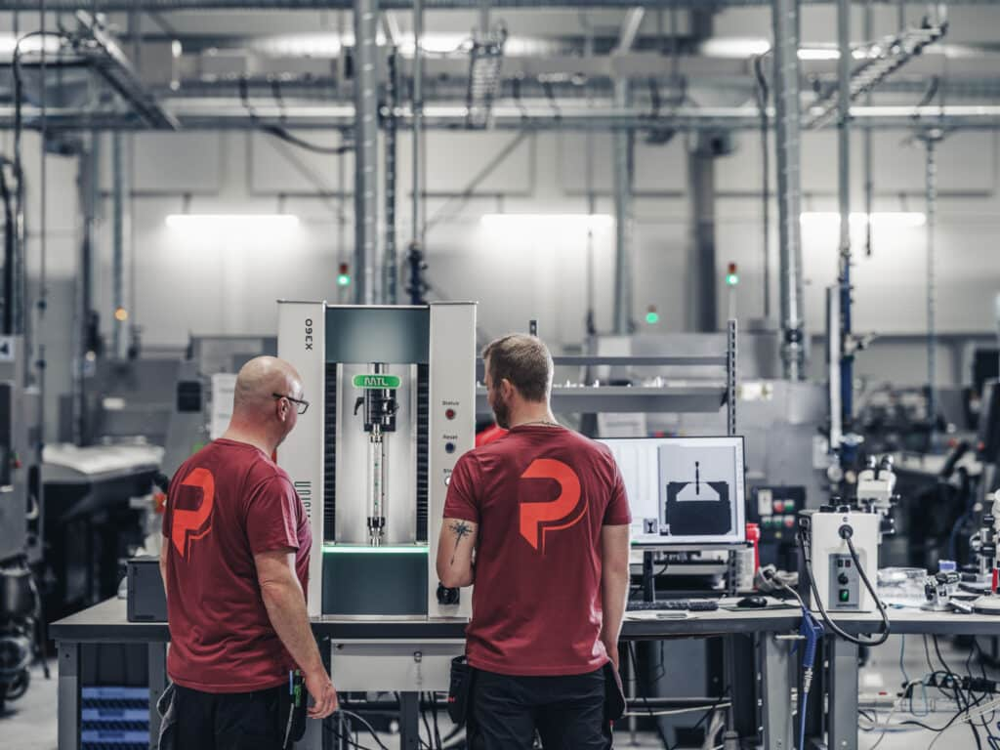

Precisionskomponenter för medicinteknik och industri
Från prototyp till serieproduktion – med er komponent i fokus.

Part Precision tillverkar komponenter utifrån kundens ritningar och specifikationer. Vi kombinerar skärande bearbetning med dokumenterade processer och nära kundsamarbete.
I vår broschyr kan ni läsa mer om våra tillverkningsmöjligheter och affärsområden inom precisionsmekanik och medicinteknik.
LÄS BROSCHYREN